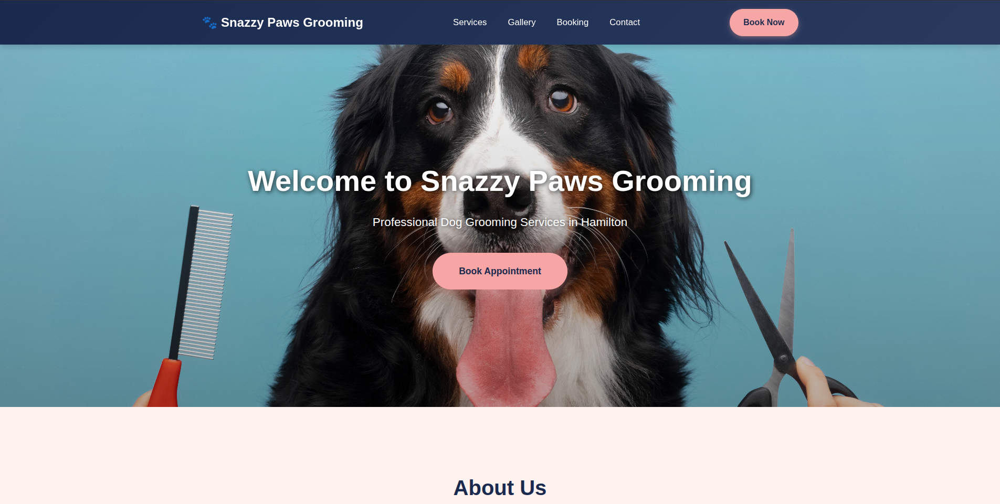

Matias Farfan
Full-Stack Developer · Automation Builder · Linux Enthusiast · Next.js Developer
I focus on creating effective and engaging web experiences. I'm passionate about leveraging modern technologies to build robust and user-friendly applications. I'm always looking for new challenges and opportunities to collaborate.
01 — Work
Selected Projects
Web apps, automation workflows and the homelab that runs them — each one built to learn something new.
02 — About
A Little About Me
Junior full-stack developer building things with Next.js and TypeScript. I got here via tourism and hospitality, but somewhere along the way I fell into the rabbit hole of self-hosting, Docker, and automation. Now I spend a lot of time on Linux, spinning up services, and writing workflows that save people from repetitive work. I like the whole stack—frontend to backend to the infrastructure keeping it all running.
20+
Docker containers in prod
3+
Automation workflows
2
Years hands-on
Education
Diploma in Web Development & Design
Credential
03 — Stack
Skills & Tools
Frontend
- HTML5 / CSS3
- JavaScript
- React / Next.js
- Tailwind CSS
Backend
- Node.js
- REST APIs
- Supabase (PostgreSQL)
- Stripe
DevOps & Infra
- Docker / Portainer
- Linux
- Nginx
- Git
- Self-hosted services
Automation & AI
- n8n workflows
- Ollama (local LLMs)
- Claude Code
04 — Contact
Get In Touch
I'm currently looking for my first full-time developer role in Christchurch or remote. If you've got a project, a role, or just want to talk Docker and automation — my inbox is open.
Say Hello